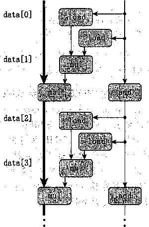

整数
浮点数
F*
4.00
4.00
2.00
4.00
1.00
函数
combine4 combine5 combine6 延迟界限 吞吐量界限
页码
338
349
352
D*
5.00
2.50
5.00
1.00
o o o o o
.0.0.5.0.0 +2.2.1 1 1
3.00
1.50
1.50
3.00
1.00
3.00
1.50
3.00
1.00
方法
累积在临时变量中 展开2次
2次展开，2路并行
/* Unroll loop by 2, 2-way parallelism */
void combine6(vec^ptr v, data—t *dest)
4
•5
6
7
9 0 1 2
3
4
5
6
7
9
20
,21
22
long int i;
long int length = vec_length(v); long int limit = length-1; data_t *data = get_vec_start(v); data_t accO = IDENT; data_t accl = IDENT;
/* Combine 2 elements at a time */ for (i = 0; 1 < limit; i+=2) i accO = accO DP data[i]; accl = accl OP data[i+l];
/* Finish any remaining elements */ for (; i < length; i++) { accO = accO OP data[i];
>
♦dest = accO OP accl;
图5-21两次循环展开,并且使用两路并行。这种方法利用了功能单元的流水线能力
图5-22展示了做&次循环展开和&路并行变换的效果，A最大为6。我们可以看到，随着A: 值的增加,所有合并情況的CPE都增加了。对于整数乘法和浮点数运算,我们看到CPE的值为 Llk， 这里i是操作的延迟，最高可以得到吞吐量界限1.00。我们还看到使用标准的展开，整数 加法也达到了这个界限。
—O— double * —i-S—- float 氺
float +
一 4#«^ int 氺 .
細
..
X獅—
int +
图5-22 A次循环展开和灸路并行时的CPE性能。釆用这种变换，所有的CPE都有提高，最高到达 限定值1.00
要理解combines的性能，我们从图5-23所示的代码和操作序列开始。通过图5-24所示 的过程，可以推导出一个模板，给出迭代之间的数据相关。同combines—样，这个内循环包 括两个mulss运算，但是这些指令被翻译成读写不同寄存器的mul操作，它们之间没有数据相 关（见图5-24b)。然后，把这+模板复制《/2次（见图5-25),就是在一个长度为《的向量上执 行这个函数的模型。可以看到，现在有两条关键路径，一条对应于计算索引为偶数的元素的乘积 (程序值accO),另一条对应于计算索引为奇数的元素的乘积（程序值accl)。每条关键路径只 包含《/2个操作，因此导致CPE等于4.00/2。相似的分析可以解释我们观察到的对于不同的数据 类型和合并运算的组合，延迟为Z的操作的CPE等于L/2。实际上，我们正在利用功能单元的流 水线能力，将利用率提髙到2倍。当我们用更大一些的A值来实施这种变换时，发现不能将CPE 降低到1.00以下。到1.00的时候，几个功能单元都已经是在最大负荷下工作了。
mulss (%rax, %rdx, 4), %xram0
mulss 4 (%rax,.%rdx, 4), %xmml
addq $2, %rdx cmpq %rdx, %rbp jg loop
图5-23 combine6内循环代码的图形化表示。每次循环有两条mulss指令，每条指 令被翻译成一个load和一个mul操作
data[/]
養
ddta[i+l]
I
b)
图5-24将combines的运算抽象成数据流图。重新排列、简化和抽象图5-23的表示，给出连续迭代 之间的数据相关（a)。我们看到两个nml操作之间没有相关（b)
在第2章已经看到，补码运算是可交换和可结合的，甚至是当溢出时也是如此。因此，对于 整数数据类型，在所有可能的情况下,combine 6 计算出的结果都和combine 5 计算出的相同。 因此，优化编译器潜在地能够将combined中所示的代码首先转换成 C ombine5的一个二路循 环展开变种，然后再通过引入并行性，将之转换成combines的一个变种。许多编译器自动进
行循环展开，但是引入这种并行形式的编译器相对比较少。
关键路径
图5-25 combine6对一个长度为《的向量进行 操作的数据流表示。现在有两条关键路 径，每条关键路径包含《/2个操作
由于四舍五入或溢出，combine5
另一方面，我们知道浮点乘法和加法不晕可结合的。因此, 和combine6可能产生不同的结果。例如，假 想这样一种情况，所有索引值为偶数的元素都是 绝对值非常大的数，而索引值为奇数的元素都非 常接近于0.0。那么，即使最终的乘积不会溢 出，乘积P反也可能溢出，或者也可能下 溢。不过在大多数现实的程序中，不太可能出现 这样的情况。因为大多数物理现象是连续的，所 以数字数据也趋向于相当的平滑，不会出什么问 题。即使是有不连续的时候，它们通常也不会导 致前面描述的条件那样的周期性模式。按照严格 顺序对元素求和不太可能会有比“分成两组独立 求和，然后再将这两个和相加”根本上更好的准 确性。对大多数应用程序来说，使性能翻倍要比 对奇怪的数据模式产生不同的结果的风险更重 要。但是，程序开发人员应该与潜在的用户协 商，看看是否有特殊的条件，可能会导致修改后 的算法不能接受。
重新结合变换
现在来探讨另一种打破顺序相关从而使性 能提高到延迟界限之外的方法。我们看到过 做简 单循环展开的 CO mbin e 5没有改变合并 向量元素形成和或者乘积中执行的操作。不 过，对代码 做很小 的改动，我们可以从根本 上改变合并执行的方式，也极大地提髙程序 的性能。
图5-26给出了一个函数combine7,它 与未展开的代码combine5 (图5-16)的 唯一区别在于内循环中元素合并的方式。在 combine5中，合并是以下面这条语句来实 现的
(acc OP data[i]) OP data[i+1];
而在combine7中，合并是以这条语句来实现的
acc OP (data[i] OP data [i+1]);
12
12
acc
差别仅在于两个括号是如何放置的。我们称之为 重新结合变换 （reassociation transformation),因 为括号改变了向量元素与累积值acc的合并顺序。
对于未经训练的人来说，这两个语句可能看上去本质上是一样的，但是当我们测量CPE的 时候，得到令人吃惊的结果：
浮点数
F*
4.00
4.00
2.00
4.00
1.00
整数
页码
338
349
352
355
D*
5.00
2.50 2.97
5.00
1.00
+
3.00
3.00
1.50
1.50
3.00
1.00
o o o o o o
.0.0.5.0.0.0 +2.2.12.1 1
3.00
1.50
1.50
1.51
3.00
1.00
函数
combine4 combine5 combine6 combine7 延迟界限 吞吐量界限
方法
累积在临时变量中 展开2次
2次展开，2路并行 2次展开，重新结合
/* Change associativity of combining operation */ void combine7(vec_ptr v, data_t *dest)
long int i;
long int length = vec_length(v); long int limit = length-1; data_t *data = get_vec_start(v); data_t acc = IDENT;
/木 Combine 2 elements at a. time */ for (i = 0; i < limit; i+=2) {
acc = acc OP (data[i] OP data[i+l]);
>
/* Finish any remaining elements */ for (; i < length; i++) { acc = acc OP data[i];
>
♦dest = acc;
图5-26循环展开两次，然后重新结合合并操作。这种方法也增加可以并行执行的操作数量
combine7的整数乘法情况的性能几乎与使用简单展开的版本（ CO mbine5)的性能相同， 而浮点数的情况与使用多个累积变量的版本（combine6)相同，是简单扩展的性能的两倍。 (双精度乘法的CPE等于2.97，极有可能是测量错误的结果，真实值应该是2.5。在实验中，我 们发现combine7测量出来的CPE比其他函数的更加多变。）
图5-27展示了应用重新结合变换，实现A次循环展开并重新结合的效果。可以看到，随着
■ double * 一 H 一 1 float * float + int * int +
欣展开
图5-27使用A:次循环展开和重新结合的CPE性能。釆用这种变换，所有的CPE都有改进， 最高到限制值1.00
灸值的增加，所有合并情况的cpe都有改进。对于整数乘法和浮点运算，我们看到era值接近 于L/k, 这里i是操作的延迟，最髙到达界限1.00。我们还看到整数加法当*=3时，CPE为1.00, 达到吞吐量界限和延迟界限。
图5-28说明了 combine?内循环的代码（对于单精度乘积的情况）是如何被译码成操作， 以及得到的数据相关。我们看到，来自于movss和第一个mulss指令的load操作从存储器中 加载向量元素|•和什1，第一个mul操作把它们乘起来。然后，第二个mul操作把这个结果乘以 累积值acc。图5-29给出了我们如何对图5-28的操作进行重新排列、优化和抽象，得到表示一 次迭代中数据相关的模板（见图5-29b)。对于combine5和combine7的模板，有两个load 和两个nrnl操作，但是只有一个mul操作形成了循环寄存器间的数据相关链。然后，把这个模 板复制《/2次，给出了《个向量元素相乘所执行的计算（图5-30),我们可以看到关键路径上只 有《/2个操作。每次迭代内的第一个乘法都不需要等待前一次迭代的累积值就可以执行。因此, 最小可能的CPE减少了 2倍。当我们增加A值时，每次迭代中关键路径上一直只有一个操作。
movss (%rax, %rdx, 4 )， %xmm0
mulss 4(%rax, %rdx, 4), %xmm0
mulss %xmm0, %xmml addq $2, %rdx cmpq %rdx, %rbp jg loop
圖圓i
图5-28 combine7内循环代码的图形化表示。每次迭代被译码成与combine5或 combines类似的操作，但是有不同的数据相关
jg
b)
图5-29将 C ombi ne 7的操作抽象成数据流图。我们重新排列、简化和抽象图5-28的表示， 给出连续迭代之间的数据相关（a)。第一个nrnl操作让两个向量元素相乘，而第二 个mul操作将前面的结果乘以循环变量acc (b)
在执行重新结合变换时，我们又一次改变向量元素合并的顺序。对于整数加法和乘法，这些 运算是可结合的，这表示这种重新变换顺序对结果没有 影响。对于浮点数情况，必须再次评估这种重新结合是 否有可能严重影响结果。我们会说对大多数应用而言，
关键路径

这种差距不重要。
data[n~2]
combine7对一个长度为h的向 量进行操作的数据流表示。我们 只有一条关键路径，但是它只包 含《/2个操作
现在我们可以解释对整数乘法情况做简单循环展开 (combine5)时看到的令人吃惊的性能提高。在编译 这段代码中，GCC会执行 C ombine7中展示的重新 结合，因此，达到一样的性能。GCC还会对代码执 行多次展开。GCC认识到它可以对整数操作很安全 地执行这种变换，但是它也会认识到由于没有可结合 性，不能对浮点数情况做变换。GCC认识到得到的 代码会运行得更快，就会执行这种变换，如果确实是 这样，那就太好了，然而不幸的是，实际情况并非如 此。在实验中，我们发现对C代码做很小的改动，就 会导致GCC对操作的结合大相径庭，相对于简单的 编译达到的性能，这样做有时会使代码加速，有时又 会减慢执行速度。优化编译器必须选择它们要优化哪 些因素，看上去在选择如何对整数操作进行结合的时 候，GCC没有把最大化指令级并行当作它的优化标 准。
总的来说，重新结合变换能够减少计算中关键路 径上操作的数量，通过更好地利用功能单元的流水线 能力得到更好的性能。大多数编译器不会尝试对浮点 运算做重新结合，因为这些运算不保证是可结合的。
图 5-30
当前的GCC版本会对整数运算执行重新结合，但 是不是总有好的效果。通常，我们发现循环展开和 并行地累积在多个值中，是提高程序性能的更可靠的 方法。
®练习题5.8考虑下面的计算/r个整数的数组乘积的函
数。我们3次展开这个循环。
double aprod(double a[]， int n) int i;
double x, y, z; double r = 1;
for (i = 0; i < n-2; i+= 3) ■[
x = a[i]; y = a [i+1]; z = a[i+2]; r=r*x*y*z; /* Product computation 氺 /
>
for (; i < n; i++) r *= a[i]; return r;
对于标记为Product computation的行，可以用括号创建该计算的五种不同的结合，如下所示：
|
r = ((r |
* X) |
* y) |
* z; |
/* |
A1 |
*/ |
|
r = (r * |
(X * |
y)) |
* z; |
/* |
A2 |
本/ |
|
r = r本 |
((X * |
y) |
* z); |
/* |
A3 |
*/ |
|
r = r * |
(X * |
Cy * |
z)); |
/* |
A4 |
|
|
r = (r * |
X) * |
(y |
* z); |
/* |
A5 |
*/ |
假设在一台奴精度乘法延迟为5个时钟周期的机器上运行这些函数。根据乘法的数据相关，确定这组 CPE的下界。（辑示 ： 画出每次迭代如何计算r的图形化表示会有所帮助。）
网络旁注OPT:SIMD ：用SIMD指令达到更高的并行度
就像在3.1节中讲述的,Intel在1999年引入了 SSE指令,SSE是“Streaming SIMD Extensions”（流 SIMD it 展）的缩写，而 SIMD (读作 “sim-dee”）是 “Single-Instruction，Multiple-Data”（单指 令多数据）的缩写。SIMD执行模型背后的思想是每个16字节的XMM寄存器可以存放多个值。 在例子中，我们考虑这些寄存器可以存放4个整数或单精度值、或者2个双精度值的情况。然 后，SSE指令可以对这些寄存器执行向量操作，例如并行地加或者乘4组或者2组值。例如，如 果XMM寄存器％xmmO包含4个单精度浮点数，用a 0 ,…， a 3 表示 , *%rcx包含4个单精度 浮点数的存储器地址， 用 b 0 ， …，表示，那么指令
mulps(%rcs),%xmmo
会从存储器中读出4个值，并行地执行4个乘法，计算丨一巧• ^ 0</<3 o 我们看到，一条 指令能够产生对多个数据值的计算，因此称为“SIMD”。
GCC支持对C语言的扩展，能够让程序员在程序中使用向量操作，这些操作能够被编译成 SSE的SIMD指令。这种代码风格比直接用汇编语言写代码要好，因为GCC还可以为其他处理 器上才找得到的SIMD指令产生代码。
使用GCC指令、循环展开和多个累积变量的组合，我们的合并函数能够达到下面的 性能：
方法 |
整数 |
浮点数 |
|||
+ |
本 |
+ |
F* |
D* |
|
SSE+8次展开 |
0.25 |
0.55 |
0.25 |
0.24 |
0.58 |
吞吐量界限 |
0.25 |
0.50 |
0.25 |
0.25 |
0.50 |
正如上表所示，使用SSE指令降低了呑吐量界限，对于所有5种情况，都几乎达到了它们 的呑吐量界限。整数加法、单精度加法和乘法的呑吐量界限为0.25,这是因为SSE指令可以并 行地执行4条这样的指令，而每条指令的发射时间为1。只能同时执行两条双精度指令，所以吞 吐量界限是0.5。整数乘法运算的呑吐量界限是0.5,原因是不同的——虽然可以同时执行4条指 令，但是它的发射时间为2。实际上，只有SSE版本4以及更高的版本才有这条指令（需要命令 行标志 <-msse4’）。
5.10 优化合并代码的结果小结
我们极大化对向量元素加或者乘的函数性能的努力获得了成功。下表总结了对于标量代码所 获得的结果，没有使用SSE向量指令提供的SIMD并行性：
函数 |
页码 |
方法 |
整数 |
浮点数 |
|||
+ * |
+ F* D* |
||||||
combinel |
331 |
抽象的-01 |
12.00 |
12.00 |
12.00 |
12.01 |
13.00 |
combine6 |
352 |
展开2次，2路并行 |
1.50 |
1.50 |
1.50 |
2.00 |
2.50 |
展开5次，5路并行 |
1.01 |
1.00 |
1.00 |
1.00 |
1.00 |
||
延迟界限 |
1.00 |
3.00 |
3.00 |
4.00 |
5.00 |
||
吞吐量界限 |
1.00 |
1.00 |
1.00 |
1.00 |
1.00 |
||
使用多项优化技术，对于所有的数据类型和运算组合，使用普通的C语言代码，我们已经 能够得到接近于1.00的CPE 了,和原始版本combinel相比，性能提高超过了 10倍。
在网络旁注OPT:SIMD中讲到，我们能够利用GCC对SIMD向量指令的支持，更进一步地
提高性能。
函数 |
方法 |
整数 |
浮点数 |
|||
+ |
幸 |
+ F* D* |
||||
SIMD代码 |
SIMD+8次展开 |
0.25 |
0.55 |
0.25 |
0.24 |
0.58 |
吞吐量界限 |
0.25 |
0.50 |
0.25 |
0.25 |
0.50 |
|
对于整数和单精度数据，处理器可以支持每个周期4个合并操作，而对于双精度数据，每个 周期2个。这代表处理器性能超过6Gflops (每秒十亿个浮点操作)，现在在笔记本和台式机上 已经很常见了。
把这个性能与Cmy IS的性能做比较 ， Cray IS是1976年提出的突破性的超级计算机。这台 机器花费了大约800万美元，峰值性能0.25 Gflops,此时耗电115千瓦，比我们在这里测量的还 要慢20多倍。
有一些因素限制这个计算的性能，在使用标量指令时限制CPE达到1.00,在使用SIMD指 令时限制CPE达到0.25 (32位数据）或者0.50 (64位数据)。首先，处理器每个周期只能从数 据高速缓存中读16个字节，然后，读人到一个XMM寄存器。其次，乘法器和加法器单元每个 时钟周期只能开始一条新操作（在SIMD指令的情况下，每个这样的“操作”实际上计算2个或 者4个和或者乘积)。因此，我们已经成功地得到了这个合并函数在这台机器上能够获得的最快 结果。
—些限制因素
我们已经看到在一个程序的数据流图表示中，关键路径指明了执行该程序所需时间的一个基 本的下界。也就是说，如果程序中有某条数据相关链，这条链上的所有延迟之和等于r,那么这 个程序至少需要r个周期才能执行完。
我们还看到功能单元的吞吐量界限也是程序执行时间的一个下界。也就是说，假设一个程序 一共需要#个某种运算的计算，而微处理器只有m个能执行这个操作的功能单元，并且这些单 元的发射时间为/。那么，这个程序的执行至少需要# j/m个周期。
在本节中，我们会考虑其他一些制约程序在实际机器上性能的因素。
5.11.1寄存器溢出
循环并行性的好处受到描述计算的汇编代码的能力限制。特别地，IA32指令集只有很少量 的寄存器来存放累积的值。如果我们的并行度P超过了可用的寄存器数量，那么编译器会诉诸溢 出(spilling),将某些临时值存放到栈中。一旦出现这种情况，性能会急剧下降。作为一个说明， 比较一下我们的并行累积变量代码对整数求和在X86-64和IA32的性能：
机器 |
展开次数 |
|||||
1 |
2 |
3 |
4 |
5 |
6 |
|
IA32 |
2.12 |
1.76 |
1.45 |
1.39 |
1.90 |
1.99 |
X86-64 |
2.00 |
1.50 |
1.00 |
1.00 |
1.01 |
1.00 . |
我们看到对于IA32,当A = 4个值并行地累积时，得到最低的CPE,当A的值再变大的时 候，CPE反而变差了。还可以看到对于X86-64,我们能达到CPE等于1.00,而对于IA32,我们 达不到。
检查^=5的情况的IA32代码，给出了 IA32提供很少寄存器的影响：
IA32 code . Unroll X5 , accumulate X5 , data_t, = int. , OP :i in %edx, data in %ea.x, limit at %ebp-20
.L291: loop:
xO ^ xO * data[i] Get xl
xl = xl 本 dat.a[i+l] Store xl
x2 - x2 * data[_i.+2] x3 = x3 * data[i-i-3] Get x4
x4 = x4 * daa[i+4] Store x4
imull (%eax,%edx,4), %ecx
?. movl -16(%ebp) , %ebx
a imull 4(%eax,%edx,4) , %ebx
movl %ebx, -16(%ebp)
imull 8(%eax,%edx,4), %edi
imull 12(%eax,%edx,4), %esi
movl -28(%ebp), %ebx
imull 16(%eax,%edx,4), %ebx
movl %ebx, -28(%ebp)
'11 addl $5, %edx i+= 5
cmpl %edx, -20(%ebp) Compare 1 .imi t:i
jg .L291 If >， goto loop
在这里我们看到累积值accl和acc4被“溢出”到栈中，位于相对于％ebp偏移量为-16 和-28的位置。此外，终止值limit保存在栈中偏移量为-20的地方。这些与从存储器读和写 到存储器相对应的加载和存储会抵消使用多个值并行累积所能获得的好处。
现在我们能看到从IA32扩展到X86-64增加的八个寄存器的价值了。X86-64代码能够同时累 积最多12个值，而不会溢出任何寄存器。
分支预测和预测错误处罚
在3.6.6节中通过实验证明，当分支预测逻辑不能正确预测一个分支是否要跳转的时候，条 件分支可能会招致严重的 预测错误处罚。 既然我们已经学到了一些关于处理器是如何工作的知 识，我们就能理解这样的处罚是从哪里产生出来的了。
现代处理器的工作超前于当前正在执行的指令，从存储器读新指令,并解码指令，以确定 在什么操作数上执行什么操作。只要指令遵循的是一种简单的顺序 ， 那么这种 指令流水线化 (instruction pipelining)就能很好地工作。当遇到分支的时候，处理器必须猜测分支该往哪个方 向走。对于条件转移的情况 ， 这意味着要预测是否会选择分支。对于像间接跳转（跳转到由一个 跳转表条目指定的地址）或过程返回这样的指令，这意味着预测目标地址。在这里 ， 我们集中讨 论条件分支。
在一个使用投 机执行 （speculative execution)的处理器中，处理器会开始执行预测的分支目 标处的指令。它这样做会避免修改任何实际的寄存器或存储器位置，直到确定了实际的结果。 如果预测是正确的，那么处理器就会“提交”投机执行的指令的结果,把它们存储到寄存器或 存储器中。如果预测是错误的，处理器必须丢弃掉所有投机执行的结果,在正确的位置 ， 重新 幵始取指令的过程。这样做会引起预测错误出发 ， .因为在产生有用的结果之前，必须重新填充指 令流水线。
在3.6.6节中我们看到，最近的x86处理器有条件传送指令，在编译条件语句和表达式的时 候，GCC能产生使用这些指令的代码，而不是更传统的基于控制的条件转移的实现。翻译成条 件传送的基本思想是计算出一个条件表达式或语句两个方向上的值，然后用条件传送选择期望的 值。在4.5.10节中我们看到，条件传送指令可以被实现为普通指令流水线化处理的一部分。没有 必要猜测条件是否满足，因此猜测错误也没有处罚。
那么一个C语言程序员怎么能够保证分支预测处罚不会阻碍程序的效率呢？对于Intel Core i7来说，预测错误处罚是44个时钟周期，赌注很高。对于这个问题没有简单的答案，但是下面 的通用原则是可用的。
1.不要过分关心可预测的分支
我们已经看到错误的分支预测的影响可能非常大，但是这并不意味着所有的程序分支都会减 缓程序的执行。实际上，现代处理器中的分支预测逻辑非常善于辨别不同的分支指令有规律的模 式和长期的趋势。例如，在合并函数中闭合循环的分支通常会被预测为选择分支，因此只在最后 一次会导致预测错误处罚。
再来看另一个例子，当从 combine2 变化到 combine3 时，我们把函数 get_vec_element 从函数的内循环中拿了出来，考虑一下我们看到的很小的性能提高，如下所示：一 ~
整数
浮点数
F*
11.09
11.01
函数
combine2
combine3
页码
333
336
+
10.09
10.01
8.03
6.01
8.09
8.01
12.08
12.02
方法 直接访问数据
CPE基本上没变，即使这个函数使用了两个条件语句来检査向量索引是否在界限内。这些 检测总是确定索引是在界内的 ， 所以是高度可预测的。
作为一种测试边界检査对性能影响的方法，考虑下面的合并代码，修改combined的内循 环，用执行替换get_vec一element代码的内联函数结果替换对数据元素的访问。我们称这个 新版本为combine4b。这^代码执行了边界检查，还会通过向量数据结构来引用向量元素。
/* Include bounds check in loop */
void combine4b(vec_ptr v, data_t *dest)
long int i;
long int length = vec 一 length^v); data_t acc = IDENT;
10
n
12
13
•14
然后，
函数 |
页码 |
方法 |
整数 |
浮点数 |
|||
+ |
★ |
+ F* D* |
|||||
combine4 |
338 |
没有边界检查 |
1.00 |
3.00 |
3.00 |
4.00 |
5.00 |
combine4b |
361 |
边界检查 |
4.00 |
4.00 |
4.00 |
4.00 |
5.00 |
虽然使用边界检查的版本的性能不是太好，最多时它杷CPE增加了 3个时钟周期。考虑到
for (i = 0; i < length; i++) { if (i >= 0 && i < v->len) { acc = acc OP v->data[i];
>
>
♦dest = acc;
我们直接比较使用和不使用边界检查的函数的CPE ：
边界检查代码执行了两个条件分支，还需要一个加载操作来实现表达式v->len,这还是很小的差 异。处理器能够预测这些分支的结果，所以这些求值都不会对形成程序执行中关键路径的指令的 取指和处理产生太大的影响。
2 .书写适合用条件传送实现的代码
分支预测只对规律的模式可靠。程序中的许多测试是完全不可预测的，依赖于数据的任意特 性，例如一个数是负数还是正数。对于这些测试，分支预测逻辑会处理得很糟糕，可能预测正确 率有50%——不会比随机猜测更好。（原则上说，分支预测有可能正确率低于50%,但是这样的 情况非常少见。）对于本质上无法预测的情况，如果编译器能够产生使用条件数据传送而不是使 用条件控制转移的代码，可以极大地提高程序的性能。这不是C语言程序可以直接控制的，但 是有些表达条件行为的方法能够更直接地被翻译成条件传送，而不是其他操作。
我们发现GCC能够为以一种更“功能式的”风格书写的代码产生条件传送，在这种风格的 代码中，我们用条件操作来计算值，然后用这些值来更新程序状态，这种风格对立于一种更“命 令式的”风格，这种风格中，我们用条件语句来有选择地更新程序状态。
这两种风格也没有严格的规则，我们用一个例子来说明。假设给定两个整数数组a和b,对 于每个位置i，我们想将a [i]设置为a [幻和b[i]中较小的那一个，而将bU]设置为两f 中较大的那一个。 •
用命令式的风格实现这个函数是检查每个位置i,如果它们的顺序与我们想要的不同，就交 换两个元素：
,1 /* Rearrange two vectors so that for each ± , b[i] >= a [i] */
void minmaxl(int a[], int b[], int n) {
|
for (i |
= o ； |
i < n; i++) |
|
|
5 |
if |
(a[i] |
> b[i]) { |
|
6 |
int |
t = a[i]; |
|
|
7 |
a[i] |
=b[i]; |
|
|
8 |
b[i] |
=t; |
9 }
o >
在随机数据上测试这个函数 ， 得到的CPE大约为14.50,而对于可预测的数据，CPE为 3.00〜4.00,很明显是高预测错误惩罚的迹象。
用功能式的风格实现这个函数是计算每个位置i的最大值和最小值，然后将这些值分别赋 给 a[i]和 b[i] ：
/* Rearrange two vectors so that for each, i, b[i] >= a[;i]
void minmax2(int a[] , int b[] , int n) {
int i;
a for (i = 0; i < n; i++) {
int min = a[i] < b[i] ? a[i] : b[i];
int max = a[i] < b[i] ? b[i] : a[i] ;
a[i] = min;
b[i] = max;
>
io >
对这个函数的测试表明无论数据是任意的 ， 还是可预测的 ， CPE都大约为5.0。（我们还检查 了产生的汇编代码，确认它确实使用了条件传送。）
在3.6.6节中讨论过，不是所有的条件行为都能用条件数据传送来实现 ， 所以无可避免地在 某些情况中，程序员不能避免写出会导致条件分支的代码，而对于这些条件分支，处理器用分支 预测可能会处理得很糟糕。但是，正如我们讲过的，程序员方面用一点点聪明，有时就能使代码 更容易被翻译成条件数据传送。这需要一些试验，写出这个函数的不同版本，然后检査一下产生 出的汇编代码 ， 并测试性能。
练习题5.9对于归并排序的合并步骤的传统的实现需要三个循环：
void merge (int srcl [], int src2[], int dest [] , int n) {
int il = 0;
int i2 = 0;
A int id = 0;
while (il < n && i2 < n) i
if (srcl [il] < src2[i2])
dest[id++] = srcl [i1++];
else .
dest[id++] = src2 [i2++];
10 >
while (il < n)
dest[id++] = srcl [il++];
while (i2 < n)
dest [id++] = src2[i2++];
,15 >
对于把变量il和i2与n做比较导致的分支,.有很好的预测性能——唯一的预测错误发生在它们第一 次变成错误时。另一方面，值srcl[il]和src2[i2]之间的比较（第6行)，对于通常的数据来说， 都是非常难以预测的。这个比较控制一个条件分支 ， 得到的CPE大约为17.50 (这里元素的数量为2«)。 重写这段代码，使得可以用一个条件移动语句来实现第一个循环中条件语句（第6〜9行）的影响。
理解存储器性能
到目前为止我们写的所有代码,以及我们运行的所有测试，只访问相对比较少量的存储器。 例如，我们都是在长度小于1000个元素的向量上测试这些合并函数，数据量不会超过8000个字 节。所有的现代处理器都包含一个或 多个高速缓存 （cache)存储器 ， 以对这样少量的存储器提 供快速的访问。本节会进一步研究涉及加载（从存储器读到寄存器）和存储（从寄存器写到 存储器）操作的程序的性能，只考虑所有的数据都存放在高速缓存中的情况。在第6章，我 们会更详细地探究髙速缓存是如何工作的，它们的性能特性，以及如何编写充分利用高速缓 存的代码。
如图5-11所示，现代处理器有专门的功能单元来执行加载和存储操作，这些单元有内部的 缓冲区来保存未完成的存储器操作请求集合。例如，Intel Core i7的加载单元的缓冲区可以保存 最多48个读请求，而存储单元的缓冲区可以保存最多32个写请求[99]。每个这样的单元通常可 以每个时钟周期幵始一个操作。
加载的性能
一个包含加载操作的程序的性能既依赖于流水线的能力 ， 也依赖于加载单元的延迟。在对 合并运算在Core i7上的实验中，我们看到除了在使用SIMD操作时以外，CPE从没有到过1.00 以下。一个制约示例的CPE的因素是，对于每个被计算的元素，所有的示例都需要从存储器读 一个值。由于加载单元每个时钟周期只能启动一条加载操作，所以CPE不可能小于1.00。对于 每个被计算的元素必须加载A个值的应用，我们不可能获得低于&的CPE (例如参见家庭作业 5.17)。
到目前为止，我们在示例中还没有看到加载操作的延迟产生的影响。加载操作的地址只依赖 于循环索引i,所以加载操作不会成为限制性 能的关键路径的一部分。
1 |
typedef struct ELE { |
2 |
struct ELE *next ; |
3 |
int data; |
4 |
} list_ele, *list_ptr; |
5 6 |
int list_len(list_ptr Is) { |
7 |
int len = 0; |
8 |
while (Is) { |
9 |
len++ ; |
10 |
Is = ls->next ; |
1 1 |
> |
12 13 |
return len; > |
图 5-31 链表函数。这些函数说明了加载操作的延迟
要确定一台机器上加载操作的延迟，我 们可以建立由一系列加载操作组成的一个计 算，一条加载操作的结果决定下一条操作的 地址。作为一个例子，考虑图5-31中的函 数list_len,它计算一个链表的长度。在 这个函i的循环中，变量Is的每个后续值 依赖于指针引用ls->next读出的值。测 试表明函数list一len的CPE为4.00,我 们认为这直接表明了加载操作的延迟。要弄 懂这一点，考虑循环的汇编代码。（我们给 出了这段代码的X86-64版本。IA32代码非 常类似。）
len in %eax, Is in. %rdi
.Lll ： loop:
addl $1, %eax Increment len
movq (%rdi), %rdi Is = ls->next
A testq %rdi , %rdi Test Is
loop
jne .Lll If nonnull , go
第3行上的movq指令是这个循环中关键的瓶颈。寄存器％rdi的每个后继值都依赖于加载操作 的结果，而加载操作又#%rdi中的值作为它的地址。因此，直到前一次迭代的加载操作完成， 下一次迭代的加载操作才能开始。这个函数的CPE等于4.00,是由加载操作的延迟决定的。
存储的性能
在迄今为止所有的示例中，我们只分析了大部分对存储器的引用都是加载操作的函数，也就 是从存储位置读到寄存器中。与之对应的 是存储 （store)操作，它将一个寄存器值写到存储器。 这个操作的性能，尤其是与加载操作的相互关系，包括一些很细微的问题。
与加载操作一样，在大多数情况下，存储操作能够在完全流水线化的模式中工作，每个周 期开始一条新的存储。例如，考虑图5-32中所示的函数，它们将一个长度为《的数组dest的 元素设置为0。我们对这第一个版本的测试表明CPE为2.00。通过循环展开四次，如clear一 array一4的代码所示，我们得到CPE 1.00。因此，我们已经达到了每个周期一个新的存储操€ 的最佳€况。
同_前为止考虑过的其他操作不同，存储操作并不影响任何寄存器值。因此，就其本佺来 说，一系列存储操作不会产生数据相关。只有加载操作是受存储操作结果影响的，因为只有加 载操作能从由存储操作写的那个存储器位置读回值。图5-33所示的函数write 一 read说明了加 载和存储操作之间可能的相互影响。这幅图也展示了该函数的两个示例执行，i对两元素数组a 调用的，该数组的初始内容为-10和17，参数cnt等于3。这些执行说明了加载和存储操作的 一些细微之处。
在图5-33的示例A中，参数src是一个指向数组元素a [0]的指针，而dest是一个指向 数组元素a [1]的指针。在此种情况中，指针引用*src的每次加载都会得到值-10。因此，在 两次迭代之后，数组元素就会分别保持固定为-10和-9。从src读出的结果不受对dest的写
的影响。在较大次数的迭代上测试这个示例得到CPE等于2.00。
/* Set elements of array to 0 */
void clear_array(int *dest, int n) {
|
3 |
int |
i； |
|
4 |
for |
(i = 0; i < n; i++) |
|
5 6 |
> |
dest [i] = 0; |
|
1 |
/* Set elements of array to 0, |
|